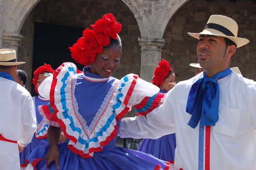
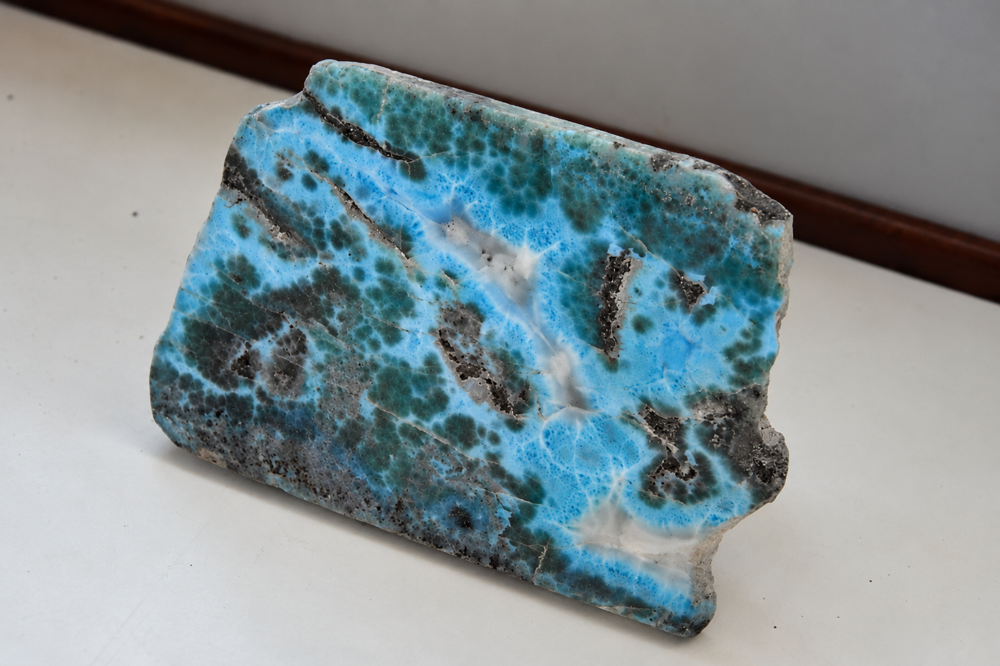
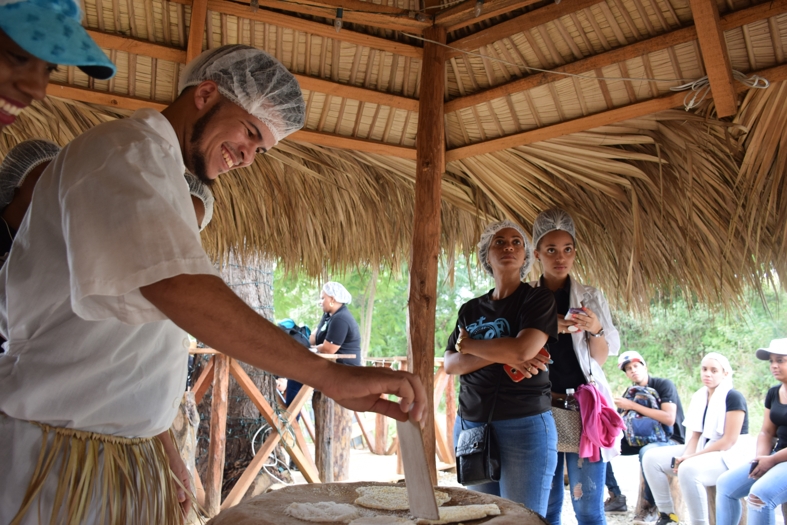
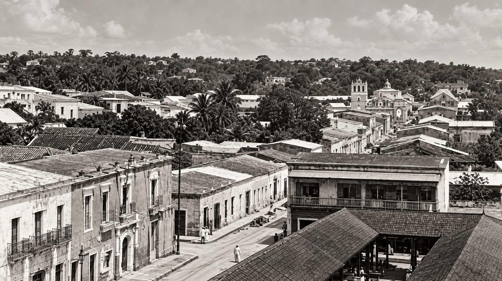
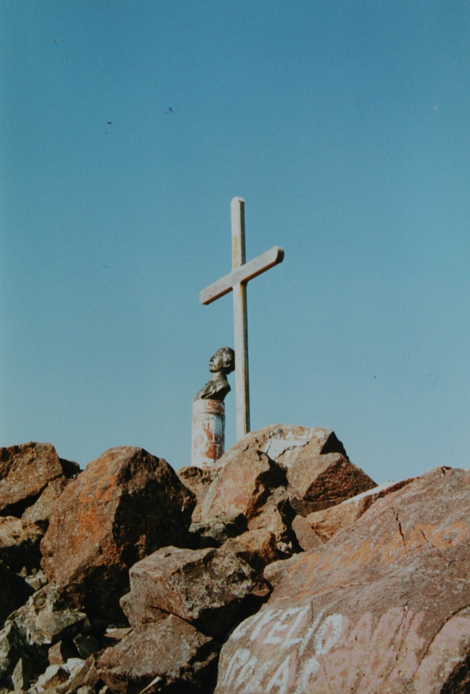

Merengue
Mais do que um ritmo dançante, o merengue é um símbolo da identidade dominicana. Sua música e dança foram reconhecidas pela UNESCO como Patrimônio Cultural Imaterial da Humanidade em 2016.
Um olhar mais atento
Por trás das praias paradisíacas, a República Dominicana guarda ritmos que conquistaram o mundo, símbolos nacionais singulares, tradições centenárias e riquezas naturais que revelam diferentes capítulos de sua história.
Conhecer essas curiosidades é descobrir um país onde a música faz parte da vida cotidiana, a herança colonial permanece nas ruas e a natureza oferece tesouros encontrados em poucos lugares do planeta.
Para começar
Quatro histórias rápidas para observar a República Dominicana por novas perspectivas.
Mais do que um ritmo dançante, o merengue é um símbolo da identidade dominicana. Sua música e dança foram reconhecidas pela UNESCO como Patrimônio Cultural Imaterial da Humanidade em 2016.
Nascida na República Dominicana, a bachata combina melodias envolventes e letras que frequentemente falam de amor, paixão e saudade. Em 2019, sua música e dança também foram reconhecidas pela UNESCO.
Você sabia que existe uma pedra azul encontrada exclusivamente na República Dominicana? O larimar, conhecido por suas tonalidades azuladas e esbranquiçadas, foi declarado pedra nacional em 2011.
A bandeira dominicana possui um escudo central com uma Bíblia aberta e uma cruz. Esse detalhe torna o símbolo nacional especialmente singular e está descrito na Constituição do país.
Cultura no cotidiano
Práticas e celebrações que revelam a essência da cultura dominicana.

O merengue e a bachata estão presentes em festas, encontros sociais e celebrações. Seus ritmos ajudam a expressar a identidade cultural e a reunir diferentes gerações.

Máscaras elaboradas, fantasias coloridas e personagens tradicionais transformam as ruas em espaços de celebração. As manifestações carnavalescas variam de uma região para outra.

Joias, pingentes e outras peças artesanais valorizam a pedra azul característica do país. O trabalho dos artesãos conecta os recursos naturais à criatividade local.

Produzido a partir da mandioca, o casabe é um pão fino e crocante associado às tradições alimentares indígenas da região. Seus conhecimentos e práticas tradicionais foram reconhecidos pela UNESCO em 2024.
História, natureza e identidade
Referências que atravessam gerações e ajudam a contar diferentes aspectos da República Dominicana.
1990
A Cidade Colonial foi inscrita na Lista do Patrimônio Mundial da UNESCO em 1990. Suas ruas e construções preservam parte importante da história urbana do período colonial nas Américas.
3.087 metros
É o ponto mais alto do Caribe, situado em uma região montanhosa cercada por florestas tropicais e de pinheiros. Sua trilha atrai viajantes em busca de aventura e contato com a natureza.
2011
A República Dominicana reconheceu oficialmente o larimar como pedra nacional. A gema azul é um dos elementos naturais mais associados à identidade do país.
5 expressões culturais
O Ministério da Cultura dominicano destaca cinco expressões inscritas nas listas de patrimônio cultural imaterial da UNESCO: a Irmandade do Espírito Santo dos Congos de Villa Mella, os Guloyas, o merengue, a bachata e os conhecimentos tradicionais ligados ao casabe.



República Dominicana em números
Teste seu conhecimento
Selecione uma pergunta para revelar a explicação.
Sim. Ambos estão profundamente ligados à identidade cultural dominicana e suas expressões musicais e de dança foram reconhecidas pela UNESCO como patrimônio cultural imaterial.
Não. O único depósito conhecido dessa pedra fica na República Dominicana, o que contribui para seu valor cultural e mineral.
Sim. A UNESCO incluiu o local na lista em 1990, reconhecendo sua importância histórica e arquitetônica.
Não. Sua produção está ligada a conhecimentos tradicionais sobre o processamento da mandioca, com raízes indígenas que permanecem presentes na alimentação caribenha.
Continue explorando